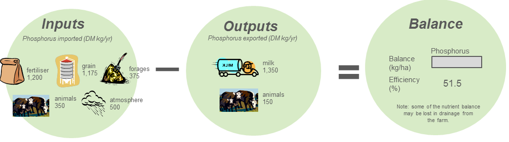

Issue 4 - Spring 2017
Open data - where do I find it?
‘Open', ‘big’ and ‘free’ - they are the new words to describe data that is publicly accessible. In 2009 the Parliamentary Inquiry into Improving Access to Victorian Public Sector Information and Data (The Economic Development and Infrastructure Committee, Parliament of Victoria) found:
‘The use and distribution of public sector information (PSI) touches upon a range of critical issues for government, in which it must balance competing demands for and upon the information and data it holds, while ensuring that it acts appropriately as a custodian of that information and data. The release of PSI by the Victorian Government for re-use may lead to increased commercial activity, provide primary data to researchers in a wide range of disciplines, and increase transparency of government in Victoria.
The Inquiry also examines issues surrounding increased use of open source software (OSS) by the Victorian Government. OSS is software that can be redistributed and modified without the payment of fees or royalties, and for which the source code is made available. Open source software already comprises a significant part of the global software makeup. The primary interest for users in the development and deployment of OSS is that it can potentially provide similar services to proprietary software at lower cost, as licence fees are not required.’
FarmBuild is targeting the need for publicly accessible information and data. FarmBuild is a repository of web services and APIs that uses an open-source platform to facilitate easy access to Agriculture Victorian data and science knowledge. The platform chosen for FarmBuild is GitHub (https://github.com/FarmBuild). If you are new to GitHub, there’s a great short animation on YouTube! Check it out at YouTube
Image: Screenshot from the GitHub animation available on YouTube.
Other Victorian Government projects and products that address the need for open data, information and knowledge include:
- Data.Vic – the place to discover and access Victorian government open data
- City of Melbourne’s Open Data Platform
- VicMap - comprehensive database of Victoria's spatial information through Department of Environment, Land, Water and Planning
- Victorian Resources Online – your gateway to a wide range of information and associated maps related to Victoria's soil and landscapes
FarmBuild Quick Links
Information pages - http://farmbuild.github.io/farmbuild
GitHub - https://github.com/FarmBuild
What is a nutrient balance model?
The nutrient balance model determines how efficiently a nutrient is being used on-farm. Since Australian dairy farms generally import larger quantities of nutrients than they export, knowing the nutrient status of your farm gives you the potential to save money. The amount of nutrients leaving in farm products (milk or animals) is subtracted from nutrient inputs to calculate the nutrient balance (kilogram of nutrient per hectare of land). The following example models the phosphorus balance on a dairy farm (233 ha).

Image: An example model of the phosphorus balance on a 233 hectare dairy farm (233 ha).
The Whole Farm Nutrient Balance Calculator Package on FarmBuild
The Whole Farm Nutrient Balance Calculator works with yearly totals. The following is the list of functions provided in this package:
- Number of animals purchased for the year (heavy cattle, average cattle, yearlings, weaned young stock and bobby calves)
- Forage purchased (hay/silage) (Tonne/year by type)
- Concentrate purchased (Tonne/year by type)
- Fertiliser purchased (Tonne/yr by type)
- Number of sold and culled cows (heavy cattle, average cattle, yearlings, weaned young stock and bobby calves)
- Milk Sold, Total Milk for Year (Litres), Total Fat/Protein (kg), Fat (kg/%), and Protein (kg/%)
- Legume – percentage (%) of pasture legumes growing on the farm
- Animal density mapping to support the mapping and monitoring of animals across a farm
- Benchmarking whisker charts estimated from 60 sets of farm data
Understanding your nutrient balance
The modelling of nutrient flow in and out of the farm is the key to improving whole farm nutrient planning. The model aims to:
- be the first step in understanding the individual farm’s nutrient requirements
- identify and measure nutrient inputs and outputs on a modern dairy farm
- assess the efficiency of nutrient use at a whole farm level
- explore opportunities to buy less fertiliser
- provide benchmark information to track improvements in nutrient use efficiency.
There are many ways in which some, or all, of the functions of the Whole Farm Nutrient Balance Calculator can be built into new web tools, services and apps. Search the JavaScript library available on GitHub at https://github.com/FarmBuild/farmbuild-dairy-nutrient-calculator
GovHack 2017
GovHack was 46 hours of open data hacking, attracting more than 2400 people in all States and Territories of Australia and New Zealand.
GovHack, supported by 13 Australian Government departments, was held on 28-30 July at various locations around Australia and New Zealand. GovHack encourages and celebrates the technical and creative capacity of software developers to build on the social and economic value of open data published by government. The national and international winners of GovHack 2017 have now been announced, check it out at https://govhack.org/national-international-winners/
Contact Us
Hayden Lewis - 03 5833 5997
Email: Hayden.Lewis@ecodev.vic.gov.au
Register for FarmBuild
For more information on registering, please click here
TweetBack to FarmBuild